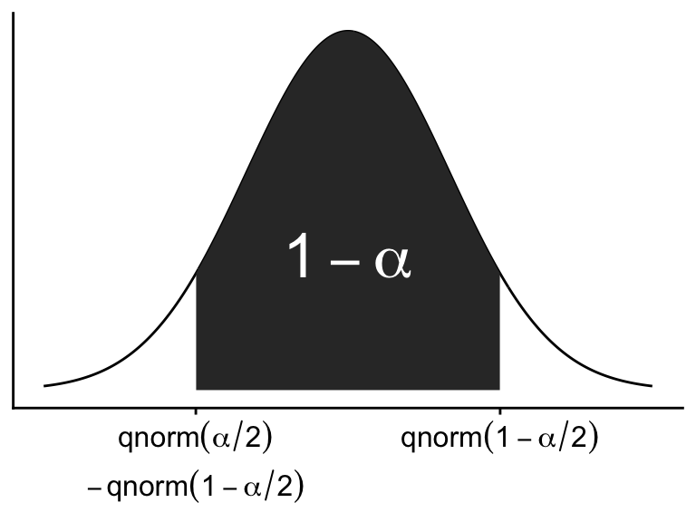
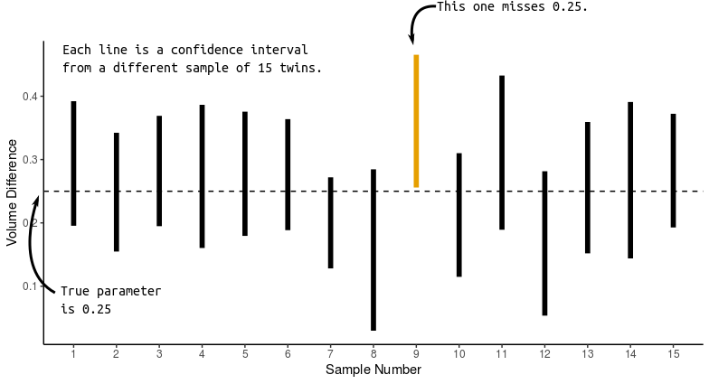
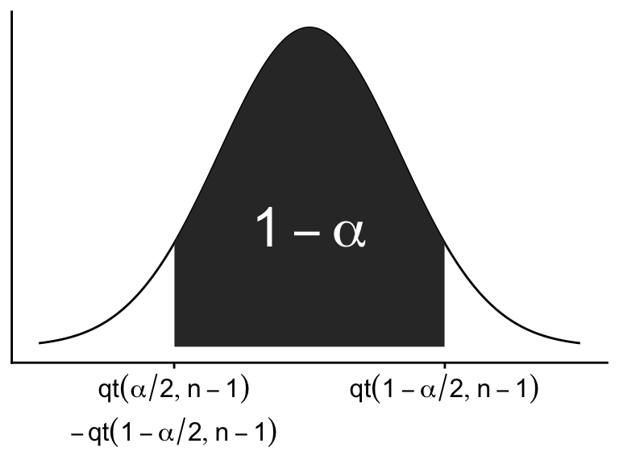

stateDiagram-v2
state "Data Generating Process" as Process
Process --> Data: Probability
Data --> Process: Inference
Chapter 6 Notes: Estimation
Estimation Set up
Probability (Chapters 3, 4, and 5):
- We know that \(X \sim N(80, 12)\)
- What is \(\Pr(X > 90)\)?
- We know that \(X \sim N(80, 12)\)
Inference (Chapters 6 through 14):
- We observe \(X_i = 81, 78, 77, 89, \ldots\)
- We assume \(X_i \sim N(\mu, \sigma^2)\)
- But the values of \(\mu\) and \(\sigma^2\) are unknown.
- What are \(\mu\) and \(\sigma^2\)?
- We observe \(X_i = 81, 78, 77, 89, \ldots\)
Estimation: Guess parameter values from data
- Point estimation: A single number is your best guess
- E.g., estimate \(\mu\) with \(\bar{X}\)
- Interval estimation: Get a range of likely values of a parameter
- E.g., confidence intervals
- Point estimation: A single number is your best guess
Hypothesis testing: How sure are we a parameter is different from some value?
- E.g., \(H_0: \mu = 0\)

Reference / Target / Study Population
Group we are interested in
Sample
Group we have data about
Parameter
Numeric summary of population
E.g.: \(\mu\), \(\sigma^2\), \(p\)
Statistic
Numeric summary of sample
E.g. \(\bar{X}\), \(s^2\), \(\hat{p}\)
Simplest way to get a sample is by a simple random sample
- Each unit has an equal chance of being in sample
Random selection (e.g., via SRS) is distinct from Random Assignment.
Random assignment: randomly assign units to different groups (e.g., treatment vs. control)
Random selection: results generalizable to target population
- Because sample is similar to population in terms of demographic variables
Random assignment: allows for claims of causality
- Because all possible confounders are equal (on average) in the groups
Randomized Clinical Trial (RCT): Random assignment of treatments to compare them.
No causal claims without random assignment
Example: tobramycin and gentamicin are antibiotics.
- Tobramycin is more aggressive and has more side effects.
- Early studies were not randomized and showed tobramycin performed worse. Why?
- Doctors gave sicker patients tobramycin
- Randomization guarantees equal number of sicker and less sick in each group (on average)
- Tobramycin is more aggressive and has more side effects.
Double blind: neither doctor nor patient know treatment
- Guards against placebo effect
Single blind: doctor knows
Unblinded: both know
Estimating the Mean
- Suppose \(E(X_i) = \mu\)
- Not necessarily normal
- Estimate \(\mu\) with \(\hat{\mu} = \bar{X} = \frac{1}{n} \sum X_i\)
- \(\hat{\mu}\) is an estimate of \(\mu\)
- \(\bar{X}\) is the sample mean
- Often (almost always), \(\hat{\mu} = \bar{X}\).
- \(\hat{\mu}\) is an estimate of \(\mu\)
Sampling distribution
Distribution of statistic across many (hypothetical) samples
The sampling distribution is used to describe properties of statistics
Properties of \(\bar{X}\)
Let \(X_1, X_2, \ldots, X_n\) be a random sample with
\(E(X_i) = \mu\), \(\operatorname{Var}(X_i) = \sigma^2\)Then:
- \(E(\bar{X}) = \mu\) (unbiased)
- \(\operatorname{Var}(\bar{X}) = \sigma^2/n\)
- More precise for larger \(n\) (consistent)
- \(\bar{X} \approx N(\mu, \sigma^2/n)\) for large \(n\), even if \(X_i\) are not also normal
- (Central Limit Theorem)
Standard error
Standard deviation of a statistic (its sampling distribution).
- \(\operatorname{SE}(\bar{X}) = \sigma / \sqrt{n}\)
Estimated Standard Error:
Estimated standard deviation of a statistic
Most of the time, when folks say “standard error”, they mean estimated standard error.
- The book does this too.
\(\operatorname{SE}(\bar{X}) = s / \sqrt{n}\)
Typically don’t know \(\sigma^2\), so estimate it with \(s^2\)
| Statistic | \(X_i\) | \(\bar{X}\) |
|---|---|---|
| Mean | \(\mu\) | \(\mu\) |
| Variance | \(\sigma^2\) | \(\sigma^2 / n\) |
| Estimated Variance | \(s^2\) | \(s^2 / n\) |
| Distribution | Unknown | \(N(\mu, \sigma^2 / n)\) (for large \(n\)) |
Mean birthweight is 112 oz with standard deviation 20.6. What is the probability the mean of 10 birthweights will be between 98 and 126?
The distribution of \(\bar{X}\) is: \[ \bar{X} \sim N\left(112, \left(\frac{20.6}{\sqrt{10}}\right)^2\right) = N(112, 6.514^2) \]
The distribution of \(\bar{X}\) is: \[ \bar{X} \sim N\left(112, \left(\frac{20.6}{\sqrt{10}}\right)^2\right) = N(112, 6.514^2) \]
We want the area between 98 and 126

Which is the area to the left of 126

Minus the area to the left of 98
We can calculate this in R:
pnorm(q = 126, mean = 112, sd = 6.514) - pnorm(q = 98, mean = 112, sd = 6.514)[1] 0.9684Interval Estimation
- \(\bar{X}\) is not exactly equal to \(\mu\)
- We want range of likely values of \(\mu\)
- We know \(\bar{X} \sim N(\mu, \sigma^2 / n)\) for large \(n\)
\[\begin{align} &\Pr\left(-1.96 \leq \frac{\bar{X} - \mu}{\sigma / \sqrt{n}} \leq 1.96\right) \approx 0.95\\ &\Leftrightarrow \Pr\left(-1.96 \cdot \frac{\sigma}{\sqrt{n}} \leq \bar{X} - \mu \leq 1.96 \cdot \frac{\sigma}{\sqrt{n}}\right) \approx 0.95\\ &\Leftrightarrow \Pr(\bar{X} - 1.96 \cdot \frac{\sigma}{\sqrt{n}} \leq \mu \leq \bar{X} + 1.96 \cdot \frac{\sigma}{\sqrt{n}}) \approx 0.95 \end{align}\]
- Thus, \(\bar{X} \pm 1.96 \cdot \frac{\sigma}{\sqrt{n}}\) captures \(\mu\) with probability 0.95.
- This is a 95% Confidence Interval (CI)
Common CI Format
Estimate ± multiplier × standard error
- More generally, a \((1 - \alpha) \cdot 100\%\) CI for \(\mu\)
\[ \bar{X} \pm \texttt{qnorm}(1 - \frac{\alpha}{2}) \cdot \frac{\sigma}{\sqrt{n}} \]

CI Interpretation:

When Variance is Not Known
The above only works when \(\sigma^2\) is known
- \(\sigma^2\) is never known
\(\frac{\bar{X} - \mu}{s / \sqrt{n}} \sim t_{n-1}\) (not \(N(0, 1)\))
- \(t\)-distribution with \(n - 1\) degrees of freedom
Only an exact result when \(X_1, \ldots, X_n \overset{\text{iid}}{\sim} N(\mu, \sigma^2)\)
- But \(t\)-distribution tends to work better in small samples even when \(X_i\) are not normal
For large \(n\), \(t_{n-1} \approx N(0, 1)\), so CLT is OK
Bell-shaped, centered at 0
As \(\text{df} \downarrow\), extreme values more likely
As \(\text{df} \uparrow\), extreme values less likelyUse \(t\) because of added variability from using \(s^2\) instead of \(\sigma^2\)
- Rosner uses notation \(t_{\text{df}, p}\) for the \(p\) quantile of a \(t_{\text{df}}\) distribution
\[ t_{\text{df}, p} = \texttt{qt(p, df)} \]

\[\begin{align} &\Pr\left(-t_{n-1, 1 - \alpha/2} \leq \frac{\bar{X} - \mu}{s/\sqrt{n}} \leq t_{n-1, 1 - \alpha/2} \right) = 1 - \alpha\\ &\Leftrightarrow \Pr\left(-t_{n-1, 1 - \alpha/2} \cdot \frac{s}{\sqrt{n}} \leq \bar{X} - \mu \leq t_{n-1, 1 - \alpha/2} \cdot \frac{s}{\sqrt{n}} \right) = 1 - \alpha\\ &\Leftrightarrow \Pr\left(\bar{X} - t_{n-1, 1 - \alpha/2} \cdot \frac{s}{\sqrt{n}} \leq \mu \leq \bar{X} + t_{n-1, 1 - \alpha/2} \cdot \frac{s}{\sqrt{n}} \right) = 1 - \alpha \end{align}\]
- Thus, the following is a \((1-\alpha)100\%\) confidence interval for \(\mu\) when \(\sigma^2\) is not known: \[\begin{align} &\bar{X} \pm t_{n-1, 1 - \alpha/2} \cdot \frac{s}{\sqrt{n}} \text{ or, equivalently}\\ &\bar{X} \pm \texttt{qt(1 - }\alpha/2\texttt{, n-1)} \cdot \frac{s}{\sqrt{n}} \end{align}\]
Suppose \(n = 10\), \(\bar{X} = 116.9\), \(s = 21.70\). Calculate 90%, 95%, 99% CIs
The degrees of freedom of the appropriate \(t\) distribution is \(10 - 1 = 9\).
E.g., for a 90% CI, \(\alpha = 1 - 0.9 = 0.1\), and you’ll need the \(1 - \alpha/2 = 1 - 0.1/2 = 0.95\) quantile of that \(t\) distribution.
Since \(n = 10\), the degrees of freedom of the appropriate \(t\) distribution is \(10 - 1 = 9\)., For 90% CI’s, \(\alpha = 0.1\) and the appropriate quantile is
qt(p = 1 - 0.1/2, df = 9)[1] 1.833We can thus get a 90% CI by
116.9 - 1.833 * 21.70 / sqrt(10)[1] 104.3116.9 + 1.833 * 21.70 / sqrt(10)[1] 129.5Similarly, for a 95% CI we have
116.9 - qt(p = 1 - 0.05/2, df = 9) * 21.70 / sqrt(10)[1] 101.4116.9 + qt(p = 1 - 0.05/2, df = 9) * 21.70 / sqrt(10)[1] 132.4And, for a 99% CI we have
116.9 - qt(p = 1 - 0.01/2, df = 9) * 21.70 / sqrt(10)[1] 94.6116.9 + qt(p = 1 - 0.01/2, df = 9) * 21.70 / sqrt(10)[1] 139.2- Note:
- CI level \(\uparrow\) (so \(\alpha \downarrow\)) \(\Rightarrow\) larger intervals
- \(n \uparrow\) \(\Rightarrow\) smaller intervals
- \(s^2 \uparrow\) \(\Rightarrow\) larger intervals
Estimate Variance:
We estimate \(\sigma^2\) with \(s^2 = \frac{1}{n - 1} \sum_{i=1}^n (X_i - \bar{X})^2\)
Why \(n - 1\)?
\[ \bar{X} = \operatorname{argmin}_a \sum (X_i - a)^2 \]
The ideal estimate of \(\sigma^2\) is \(\frac{1}{n} \sum (X_i - \mu)^2\). However,
\[ \frac{1}{n} \sum (X_i - \bar{X})^2 \leq \frac{1}{n} \sum (X_i - \mu)^2 \]
So, \(\frac{1}{n} \sum (X_i - \bar{X})^2\) is too small. Dividing by \(n-1\) instead of \(n\) makes it a little larger, and it turns out it makes it larger by the correct amount.
Property of the variance: \[ \frac{s^2}{\sigma^2 / (n - 1)} \sim \chi^2_{n - 1} \]
That is, the chi-squared distribution with \(n - 1\) degrees of freedom.
This property only holds when the original data (\(X_1,X_2,\ldots,X_n\)) or normally distributed.
Properties of chi-squared:
- Support \(\geq 0\)
- \(E(\chi^2_{\text{df}}) = \text{df}\)
- df \(\downarrow\) \(\Rightarrow\) thicker tails (extreme events happen more often)
Can use this to get confidence intervals for \(\sigma^2\) (only when your original data are normal).
Let \(\chi^2_{\text{df}, p}\) = \(p^\text{th}\) quantile of a \(\chi^2_{\text{df}}\) distribution
qchisq(p, df)
\[\begin{align*} &\Pr\left( \chi^2_{n-1, \alpha/2} \leq \frac{s^2}{\sigma^2/(n-1)} \leq \chi^2_{n-1, 1-\alpha/2} \right) = 1 - \alpha\\ &\Leftrightarrow \Pr\left( \frac{(n - 1)s^2}{\chi^2_{n-1, 1 - \alpha/2}} \leq \sigma^2 \leq \frac{(n - 1)s^2}{\chi^2_{n-1, \alpha/2}} \right) = 1 - \alpha \end{align*}\]
Thus a \((1-\alpha)100\%\) CI for the population variance (only when the original data are normally distributed) is: \[ \frac{(n - 1)s^2}{\chi^2_{n-1, 1 - \alpha/2}} \leq \sigma^2 \leq \frac{(n - 1)s^2}{\chi^2_{n-1, \alpha/2}} \]
Notes:
- Less often constructed than CI for \(\mu\)
- Very sensitive to violations of normality
- CLT does not save you
- In real life, folks use a bootstrap if they want a CI for the variance.
Estimate Binomial Proportion
Let \(X_1, X_2, \ldots, X_n\) be independent Bernoulli trials s.t.:
\[ X_i = \begin{cases} 1 & \text{w.p. } p \\ 0 & \text{w.p. } 1 - p \end{cases} \]
Then \(X = \sum_{i=1}^n X_i\) = number of 1’s out of \(n\) trials
\(X \sim \text{Bin}(n, p)\)
Example: Estimate prevalence of malignant melanoma
- Sample \(n = 5000\) individuals.
- \(X_i = 1\) if has melanoma, \(0\) if no
- Sample \(n = 5000\) individuals.
Goal: Observe \(X_i\), estimate \(p\)
We estimate \(p\) with \[ \hat{p} = \frac{1}{n} \sum X_i = \frac{X}{n} = \text{proportion of 1's} \]
Properties:
- \(E(\hat{p}) = E\left(\frac{X}{n}\right) = \frac{1}{n} E(X) = \frac{1}{n} n p = p \Rightarrow\) unbiased
- \(\operatorname{Var}(\hat{p}) = \operatorname{Var}\left(\frac{X}{n}\right) = \frac{1}{n^2} \operatorname{Var}(X) = \frac{1}{n^2} n p(1 - p) = \frac{p(1 - p)}{n}\)
- More precise for larger \(n\) \(\Rightarrow\) consistent
Estimated standard error: \[ \sqrt{ \frac{ \hat{p}(1 - \hat{p}) }{n} } \]
Goal: Interval estimate of \(p\)
For large \(n\), \(\hat{p} \sim N\left(p,\ \frac{p(1 - p)}{n} \right)\)
- Rule of thumb: \(n \hat{p}(1 - \hat{p}) \geq 5\)
Let \(z_p =\)
qnorm(p)\(= p^\text{th}\) quantile of \(N(0, 1)\)Then, subracting the mean from \(\hat{p}\) and dividing by the estimated standard error, we have: \[ \frac{ \hat{p} - p }{ \sqrt{ \frac{ \hat{p}(1 - \hat{p}) }{n} } } \approx N(0, 1) \]
Thus: \[ \Pr\left( z_{1 - \alpha/2} \leq \frac{ \hat{p} - p }{ \sqrt{ \hat{p}(1 - \hat{p}) / n } } \leq z_{\alpha/2} \right) \approx 1-\alpha \]
Solving for \(p\), we get the following \((1-\alpha)100\%\) CI for \(p\): \[ \hat{p} \pm z_{1 - \alpha/2} \cdot \sqrt{ \frac{ \hat{p}(1 - \hat{p}) }{n} } \]
This follows the “Estimate \(\pm\) Multiplier \(\times\) Standard Error” format for a confidence interval.
Suppose out of 10,000 women, 400 have breast cancer. What is a 95% CI for breast cancer incidence?
\(n = 10000\) and \(x = 400\). We need the \(1 - \alpha = 1 - 0.05 / 2 = 0.975\) quantile of the standard normal.
Our estimated incidence is \(\hat{p} = 400 / 10000 = 0.04\)
Our estimated standard error is
sqrt(0.04 * (1 - 0.04) / 10000)[1] 0.00196Checking for our rule of thumb: \(n \hat{p}(1 - \hat{p}) = 384 > 5\), so we can use the CLT.
For a 95% confidence interval, \(\alpha = 0.05\) and we need the \(1 - \alpha/2 = 1 - 0.05/2 = 0.975\) quantile of the standard normal distribution, denoted \(z_{0.975}\), or
qnorm(0.975)[1] 1.96Thus, our 95% confidence interval is
0.04 - 1.96 * 0.00196[1] 0.036160.04 + 1.96 * 0.00196[1] 0.04384Exact test
What if \(n\) is small? Use an exact method
Find \(p_1\) and \(p_2\) such that: \[\begin{align*} \frac{\alpha}{2} &= \text{pbinom}(x,\ \text{size} = n,\ \text{prob} = p_1)\\ \frac{\alpha}{2} &= 1 - \text{pbinom}(x - 1,\ \text{size} = n,\ \text{prob} = p_2) \end{align*}\]
E.g., \(n = 10\) and \(X = 3\). Suppose we want a 80% CI (so \(\alpha = 0.2\)).
The value of \(p_1\) such that the probability \(X\) being at least \(3\) equals \(\alpha/2=0.1\) is 0.1158. Visually, the sum of the heights of the orange bars is 0.1:
The value of \(p_1\) such that the probability \(X\) being at most \(3\) equals \(\alpha/2=0.1\) is 0.5517. Visually, the sum of the heights of the orange bars is 0.1:

Estimate Poisson Mean
\(Y \sim \text{Poi}(\mu)\) where \(\mu = \lambda T\)
Goal: Estimate \(\lambda\)
- \(\lambda\) = incidence rate per unit time
- \(T\) = time
- \(\lambda\) = incidence rate per unit time
Example: Leukemia rate in Woburn, MA.
- 12,000 residents, 10 years, 12 children got leukemia
A common unit in biostatistics is a person-year
- 1 person being followed for 1 year
- Normalizes by number of people in a study
- E.g., 12 cases out of 20 is a lot more than 12 out of 20000
- 1 person being followed for 1 year
Example: Woburn study had 12,000 people × 10 years = 120,000 person-years
We estimate \(\lambda\) with: \[ \hat{\lambda} = \frac{X}{T} \]
\(T\) can be in any unit of time. E.g., person-year.
\(\hat{\lambda}\) is unbiased: \[ E(\hat{\lambda}) = E\left( \frac{X}{T} \right) = \frac{E(X)}{T} = \frac{\lambda T}{T} = \lambda \quad \text{(unbiased)} \]
Woburn Example: \(\hat{\lambda} = \frac{12 \text{ cases}}{120{,}000 \text{ person-years}} = 0.0001 \text{ cases per person-year}\)
Cancer rates are typically low, so it is useful to multiply by 100,000 to get human-readable units
Woburn Example: \[ 0.0001 \text{ cases/person-year} = 10 \text{ cases / 100,000 person-years} \]
Exact interval uses same strategy as exact binomial case:
- Find \(\mu_1\) such that \(\Pr(X \geq x \mid \mu_1) = \alpha/2\)
- Find \(\mu_2\) such that \(\Pr(X \leq x \mid \mu_2) = \alpha/2\)
- Interval: \((\mu_1,\ \mu_2)\)
The interval for \(\lambda\) is then: \[ \left( \frac{\mu_1}{T},\ \frac{\mu_2}{T} \right) \]
Use
poisson.test()in R
One-sided CI (if we have time)
Suppose we are only interested in lower or upper bounds
- E.g., compare cancer treatment survival rate against baseline of 30%.
Want lower bound on treatment effect to see if it’s better than baseline
- E.g., compare cancer treatment survival rate against baseline of 30%.
Find \(p_1\) such that \(\Pr(p > p_1) = 1 - \alpha\)
- \(p_1\) is the random variable and \(p\) is the fixed parameter.
Or, find \(p_2\) such that \(\Pr(p < p_2) = 1 - \alpha\)
- E.g., suppose we want an upper bound on the incidence rate of some treatment group
Since \(\frac{\hat{p} - p}{\sqrt{ \hat{p}(1 - \hat{p}) / n }} \sim N(0, 1)\), we can get a one-sided confidence interval by knowing the following: \[ \Pr\left(-z_{1 - \alpha} < \frac{\hat{p} - p}{\sqrt{ \hat{p}(1 - \hat{p}) / n }} \right) = 1 - \alpha \] and solving for \(p\): \[\begin{align*} &\Leftrightarrow \Pr\left(z_{1 - \alpha} > \frac{p - \hat{p}}{\sqrt{ \hat{p}(1 - \hat{p}) / n }} \right) = 1 - \alpha\\ &\Leftrightarrow \Pr\left(\hat{p} + z_{1 - \alpha} \cdot \sqrt{ \hat{p}(1 - \hat{p}) / n } > p \right) = 1 - \alpha \end{align*}\] Thus, \(p_2\) (the upper bound of a lower one sided confidence interval) is: \[ p_2 = \hat{p} + z_{1 - \alpha} \cdot \sqrt{ \hat{p}(1 - \hat{p}) / n } \]
Similarly, \(p_1\) (the lower bound of an upper one-sided confidence interval) is: \[ p_1 = \hat{p} - z_{1 - \alpha} \cdot \sqrt{ \hat{p}(1 - \hat{p}) / n } \]
40 out of 100 patients survive a new cancer treatment. What is the lower bound on \(\Pr(\text{survive})\)? (Upper 1-sided 95% CI)
Use the fact that \[ \frac{\hat{p} - p}{\sqrt{\hat{p}(1-\hat{p})/n}} \approx N(0,1) \] for large \(n\).
We have that \[\begin{align*} &\Pr\left(\frac{\hat{p} - p}{\sqrt{\hat{p}(1-\hat{p})/n}} \leq z_{1-\alpha}\right) = 1-\alpha\\ &\Leftrightarrow \Pr\left(\hat{p} - z_{1-\alpha} \sqrt{\hat{p}(1-\hat{p})/n} \leq p\right) = 1-\alpha \end{align*}\]
Let’s find \(\hat{p}\) \[ \hat{p} = \frac{40}{100} = 0.4 \]
Let’s find \(z_{1-\alpha}\) when \(\alpha = 0.05\)
qnorm(1 - 0.05)[1] 1.645This gives us the following lower bound:
0.4 - 1.645 * sqrt(0.4 * (1 - 0.4) / 100)[1] 0.3194So the one-sided confidence interval is \(p > 0.3194\).